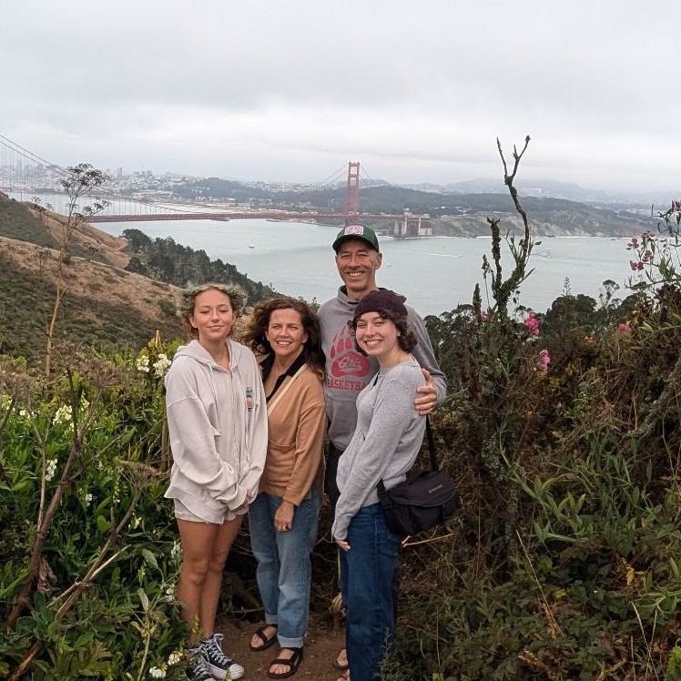
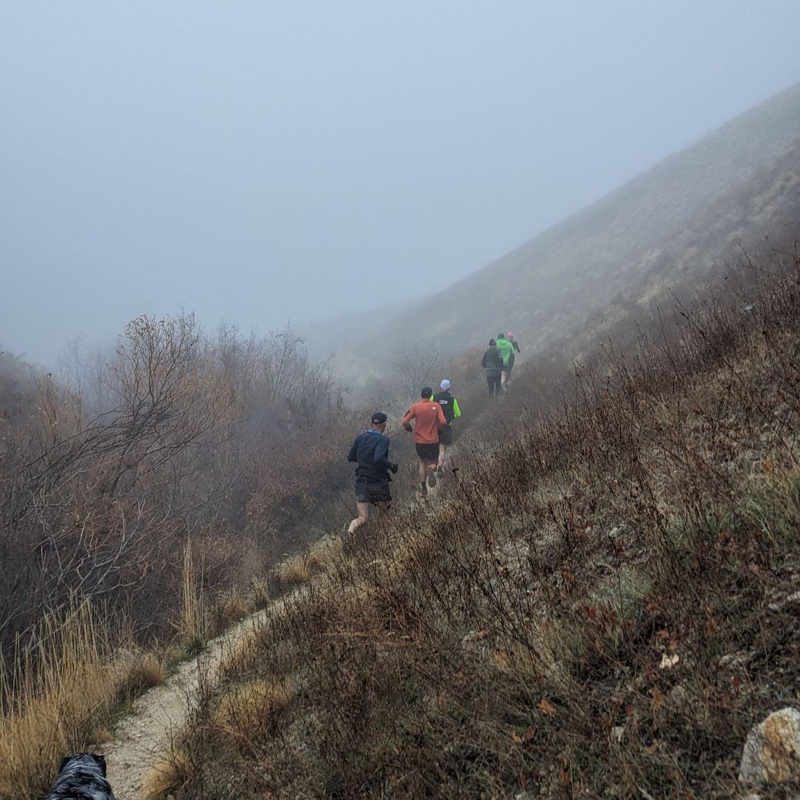

I've been married for 26 years and have 14- and 17-year-old daughters. My oldest daughter is currently looking at colleges, particularly to study music, and my younger daughter is entering her 9th grade year this year and loves to play volleyball and basketball. My wife works in data analytics for a local health care system.
Moving outside in the mountains is my jam. Trail running, mountain biking, skiing, whatever. When the everyday stresses of life get to me, the quickest way is for me to reset my head is with a quick trail run, but if I could spend the whole day trekking through the mountains, that's my true happy place.
I have 26 years in public and private schools from 6th grade to college. Most of that time has been spent teaching math, but a small part of it was involved with administering concurrent enrollment for Boise State. After 19 years at Eagle High, I am moving to Timberline High School in the Boise School District to teach two levels of calculus as well as integrated math 3.